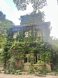
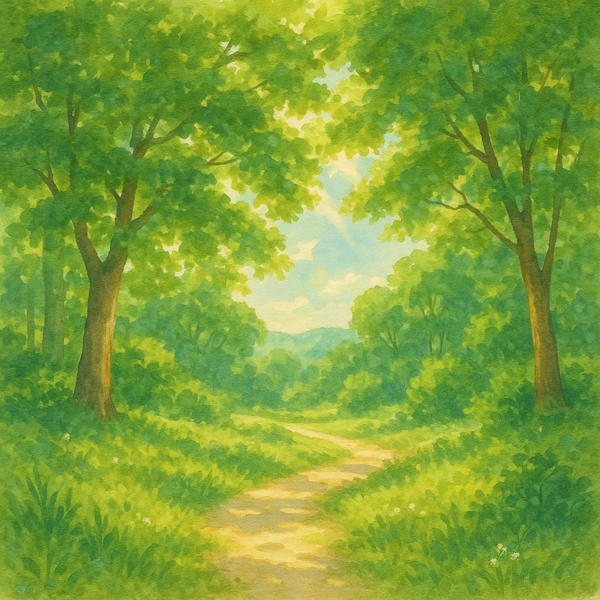

爬墙虎 自然的感觉。
2025.6，上海的一个文创园
G1 建筑被爬墙虎覆盖 → left [S_overlap_F1]
G2 自然的感觉 → right [S_text_F2]
画布: 1330 × 831 px
规划耗时: 0.34 ms
OmDet: 0 个检测 (building, gecko)
S_text_F2 AI生成图片 (耗时 50544.6ms)
S_overlap_F1 crop: [13,0]-[74,59] 来源=omdet 匹配=building(0.37), gecko(0.41) 最高分=0.41